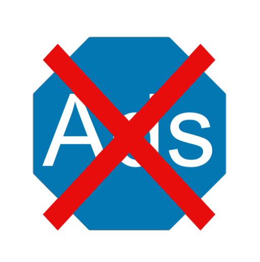

The home page of your Guardian Devil displays the device's 6 applets, device status icons, a live Twitter Feed, as well as links to settings and help.
On the top right of your page are 3 icons indicating, from left to right, your Advertisement Blocker, internet connection, and VPN status.
Each icon corresponds to a different status, on or off.
| Advertisement Blocker | Internet Connection | VPN Connection | |
| On |  |
||
| Off |  |  |
The dashboard displays the 6 main applets: Advertisement Blocking, Performance, Firewall, VPN, Router, and Scanning.
By default, the Twitter Feed shows the DukeOIT feed, a source for cybersecurity tips and updates. This can be manually changed on the Advanced Settings page.